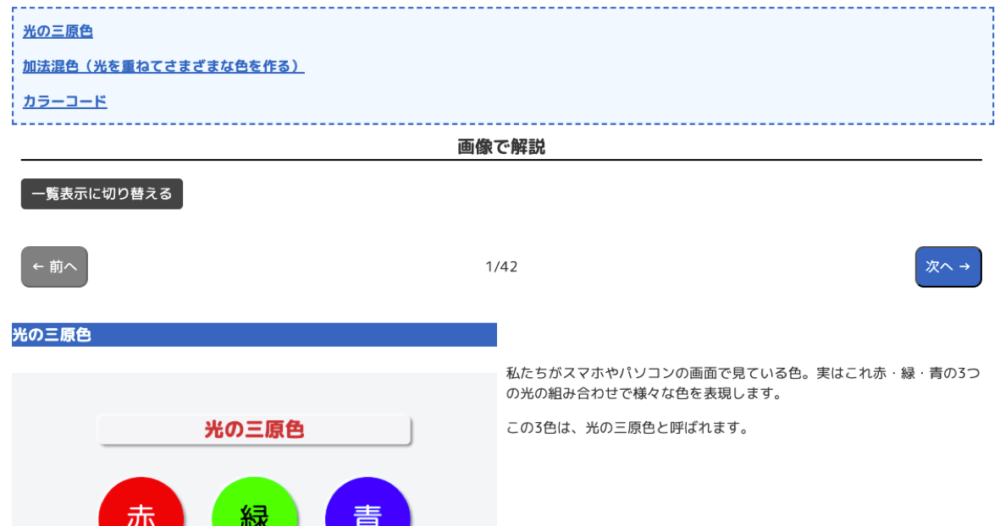
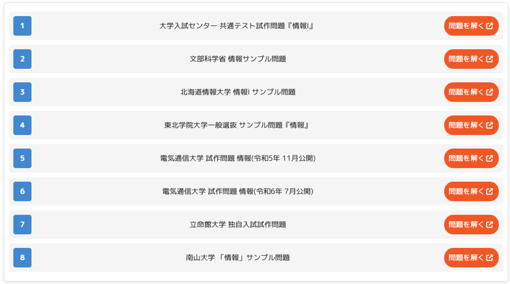
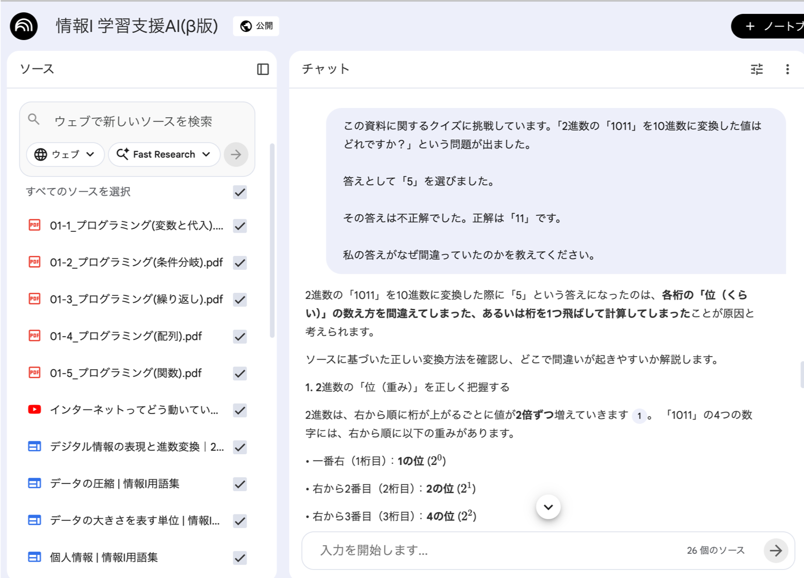
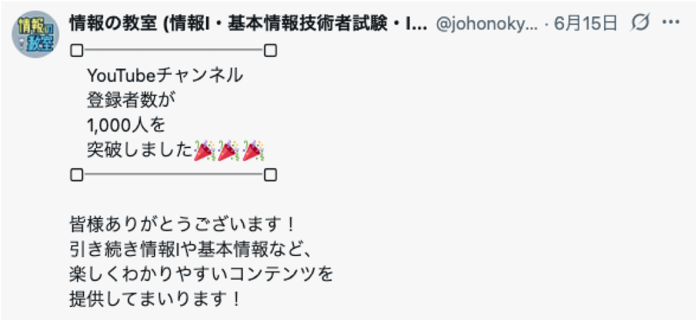
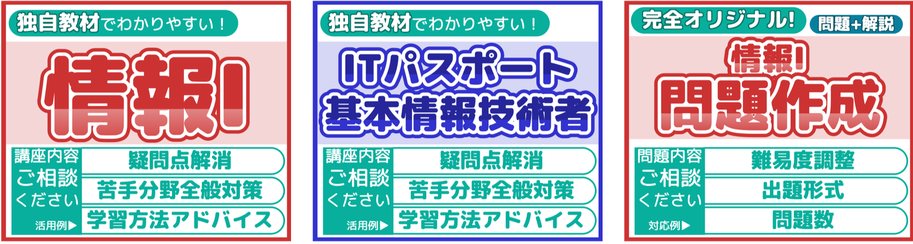

いま人気のコンテンツ ― 共テプロトレ
共通テスト「情報I」で出るプログラムを、動かしながら学べる教材です。
情報I・資格試験の学習コンテンツ
用語解説から試作問題、動画、学習支援AIまで。すべて無料・会員登録不要で使用することができます。




マンツーマン指導

新着情報
よくある質問
情報の教室の使い方や、共通テスト「情報I」のプログラミングについて、よく寄せられる質問をまとめました。
情報の教室はどんなサイトですか？
高校「情報I」やITパスポート・基本情報技術者試験の学習を支援する無料の学習サイトです。共通テストのプログラムを実際に動かせる演習ツール「共テプロトレ」、用語解説「用語の辞典」、試作問題リンク、YouTube解説動画などを、すべて無料・会員登録不要で利用できます。
利用に料金や会員登録は必要ですか？
いいえ。サイト内のコンテンツはすべて無料で、会員登録やログインなしで利用できます（一部の外部連携サービスを除く）。
「共テプロトレ」とは何ですか？
共通テスト「情報I」で出るプログラムを、ブロックで組み立てて実際に動かしながら学べる演習ツールです。コード表示・ステップ実行・解説を使って、プログラムを「書ける・読める」力を身につけられます。
共通テストのプログラムはどんな書き方ですか？
大学入学共通テスト「情報I」では、日本語をベースにしたプログラム表記が使われます。特定のプログラミング言語の文法を覚えなくても、アルゴリズムの考え方を問えるように設計されています。共テプロトレはこの書き方にそのまま対応しています。
共通テスト「情報I」の対策に使えますか？
はい。共テプロトレのプログラム演習と穴埋め問題、解説動画、試作問題リンクを組み合わせることで、共通テスト「情報I」のプログラミング分野を段階的に対策できます。
運営者情報
情報の教室は、高校「情報I」や国家試験「ITパスポート」「基本情報技術者試験」などの学習に役立つ解説・教材を提供する学習支援サイトです。共通テストで出るプログラムを実際に動かせる演習ツール、用語解説、試作問題リンク、解説動画などを、すべて無料・会員登録不要で利用できます。
参考・出典（公的機関の一次情報）
広告
📢 ちょっとだけ広告を置いています「情報の教室」は、できるだけ無料で、誰でも使えるサイトにしたいと思って運営しています。
サイトをこれからも無料で続けていくため、広告を掲載しています。 「完全無料で使わせてもらってるのに、ごめんね！」 と思いつつ、サイト運営への応援としてご理解いただけるとうれしいです。🙇
※広告の内容を「情報の教室」が推薦・保証しているものではありません。
広告先をご利用になる際は、料金・サービス内容・利用規約などを
必ずご自身で確認してください。